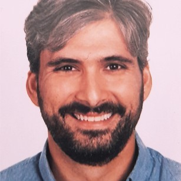

|  |
Curriculum vitaeÁlvaro García-Abásolo García-OrtaMaintenance Engineer at Thales España |
Thales España 3 años 1 mes
Ingeniero de mantenimiento
abril de 2021 - Actualmente (1 año 1 mes)
Puente Genil, Andalucía, España
Mantenimiento de instalaciones de alta velocidad en la línea Córdoba- Málaga.
| IOS development | ⭐⭐⭐⭐⭐ | Fotografía | ⭐⭐⭐ |
| Web development | ⭐⭐⭐⭐⭐ | Painting | ⭐ |